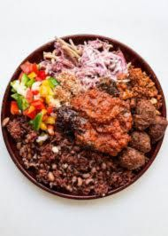

Description of waakye
Waakye is a local dish prepared in Ghana.It is made up of rice and beans and is eaten with stew and pepper.
It is usually garnished with egg,salad,spaghetti and gari.
Ingredients
- Rice
- Beans
- Egg
- Spaghetti
- Gari
Steps
- Wash your beans and place it on the fire.
- Just when the beans is about to turn soft, add your rice(wash your rice) to the beans and add a bit of water
- Turn the heat to low and let it cook for about 30 mins.
- Whiles the rice is cooking, put a pot filled with water on the stove.
- Once it starts to boil, add your spaghetti to the boiling water.
- Season it with salt and let it cook for 10 mins.
- After 10 mins, take the pot off from the fire and drain the water.
- After 30 mins, the waakye should be cooked through.
- Place your egg in some water and let it boil for 10 mins
- Fetch a couple of spoons of your waakye, add your egg,spaghetti and gari. Add stew and pepper and some salad(optional)
- Voila, you have a delicious plate of waakye in front of you.